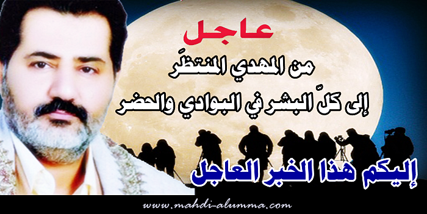
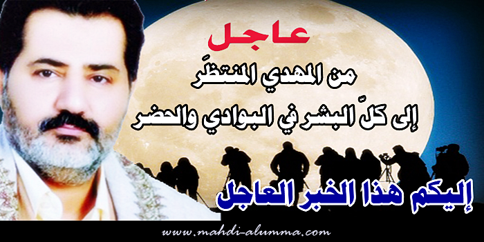

- 1 -
[ لمتابعة رابط المشاركـــــــــــــة الأصليّة للبيــــــــــــــان ]
الإمام ناصر محمد اليماني
12 - 01 - 1436 هـ
05 - 11 - 2014 مـ
05:12 صباحاً
ـــــــــــــــــــ
عــــــــــاجل: من المهديّ المنتظَر إلى كلّ البشر في البوادي والحضر إليكم هذا الخبر العاجل ..
صورة:
http://www.mediafire.com/convkey/6879/8n9aw9dt0w0cb4o7g.jpg

رابط الصورة في الموقع
بسم الله الرحمن الرحيم، والصلاة والسلام على محمدٍ رسول الله وكافة النبيين وآلهم الطيبين وجميع المؤمنين في كلّ زمانٍ ومكانٍ إلى يوم الدين، أما بعد..
من المهديّ المنتظَر في عصر الحوار من قبل الظهور إلى كلّ البشر في البوادي والحضر، لقد أدركت الشمس القمر الإدراك الأكبر في شهر محرم هذا في عامكم هذا 1436 وولد هلال محرمٍ ليلة الخميس من قبل الكسوف فاجتمعت به الشمس ليلة الجمعة وقد هو هلال، وذلكم شرط من أشراط الساعة الكُبرى نذيراً للبشر وآية التصديق للمهديّ المنتظَر، ففروا إلى الله الواحد القهار واتّبعوا الذكر من قبل أن يسبق الليل النهار بسبب مرور كوكب سقر وهو بما يسمونه بالكوكب العاشر، والله على ما أقول شهيدٌ ووكيلٌ.
{kind=link}
http://www.mediafire.com/convkey/6879/8n9aw9dt0w0cb4o7g.jpg

رابط الصورة في الموقع
بسم الله الرحمن الرحيم، والصلاة والسلام على محمدٍ رسول الله وكافة النبيين وآلهم الطيبين وجميع المؤمنين في كلّ زمانٍ ومكانٍ إلى يوم الدين، أما بعد..
من المهديّ المنتظَر في عصر الحوار من قبل الظهور إلى كلّ البشر في البوادي والحضر، لقد أدركت الشمس القمر الإدراك الأكبر في شهر محرم هذا في عامكم هذا 1436 وولد هلال محرمٍ ليلة الخميس من قبل الكسوف فاجتمعت به الشمس ليلة الجمعة وقد هو هلال، وذلكم شرط من أشراط الساعة الكُبرى نذيراً للبشر وآية التصديق للمهديّ المنتظَر، ففروا إلى الله الواحد القهار واتّبعوا الذكر من قبل أن يسبق الليل النهار بسبب مرور كوكب سقر وهو بما يسمونه بالكوكب العاشر، والله على ما أقول شهيدٌ ووكيلٌ.
وربّما يودُّ السائلون من كافة البشر أن يقولوا: "مهلاً يا من يزعم أنّه المهديّ المنتظَر فكيف لنا أن نعلم علم اليقين أنّك لمن الصادقين وأنّ الشمس أدركت القمر؟ وكيف لنا أن نعلم أنّ ذلك تصديقٌ لأحد أشراط الساعة الكبرى؟". فمن ثمّ يردُّ المهديّ المنتظَر على كافة السائلين وأقول: إنّ الشمس لا ينبغي لها أن تدرك القمر فيولد الهلال من قبل الكسوف فتجتمع به الشمس وقد هو هلال منذ بداية الدهر والشهر. تصديقاً لقول الله تعالى: {لَا الشَّمْسُ يَنْبَغِي لَهَا أَنْ تُدْرِكَ الْقَمَرَ وَلَا اللَّيْلُ سَابِقُ النَّهَارِ وَكُلٌّ فِي فَلَكٍ يَسْبَحُونَ} صدق الله العظيم [يس:40]؛ وذلك حتى يدخل البشر في عصر أشراط الساعة الكبرى فمن ثمّ تدرك الشمس القمر إلى ما شاء الله، ثمّ يصدق الله شرطاً آخر من أشراط الساعة الكبرى فيسبق الليل النهار فتطلع الشمس من مغربها.
وقد أدركت الشمس القمر مراراً وتكراراً في كثيرٍ من الأشهر ونحن ننذر البشر في كثيرٍ من البيانات الحقّ للذكر وندعوهم الليل والنهار ونقول:
[يا معشر البشر لقد أدركت الشمس القمر فولد الهلال من قبل الاقتران والكسوف فاجتمعت به الشمس وقد هو هلال].
ولكن للأسف لم يحدث لهم ذكراً ولم يفقه حتّى علماء الفلك كيف تدرك الشمس القمر! وبما أنّ الإدراك الذي حدث في شهر محرم لعامكم هذا 1436 كان من النوع الأكبر فعليه أقول قد آن الأوان لعلماء الفلك وعلماء الدين وأمّة المسلمين والناس أجمعين أن يعلموا علم اليقين أنّ الشمس أدركت القمر فولد الهلال من قبل الكسوف فاجتمعت به الشمس وقد هو هلال.
وأمّا كيف لكلّ البشر أن يعلموا علم اليقين أنّ الشمس أدركت القمر؟ فمن ثمّ نقول لهم لقد أدركت الشمس القمر إدراكاً من النوع الأكبر في هلال محرم لعامكم هذا 1436 فولد الهلال ليلة الخميس من قبل كسوف الشمس الذي حدث في سماء بعض الدول فاجتمعت به الشمس ليلة الجمعة وقد هو هلالٌ، ولذلك لم تكن أول مشاهدةٍ لهلال محرمٍ إلا بعد غروب شمس الجمعة ليلة السبت. واعلموا أنّ لله الحجّة البالغة، وعليه فإنّني المهديّ المنتظَر أعلن للبشر:
إنّ ليلة الخامس عشر ليلة النّصف من شهر محرم بحساب أسرار تاريخ الإدراك لشهر محرمٍ أنه سوف يكتمل البدر ليلة الغد الخميس، وسوف تجدون القمر البدر يظهر من الشرق بعد غروب شمس الأربعاء مباشرةً، حتى يعلم المسلمون والمتابعون للنبأ من العالمين أنّ الشمس حقاً أدركت القمر، فيقولون: "فكيف يبدر القمر ولم ينقضِ بعد من شهر محرم غير اثني عشر يوماً!" فلعلّه يحدث لكم ذكراً فتتقون الله الواحد القهار فتتبعون القرآن العظيم ذكر الله إلى كافة البشر وهم عنه معرضون إلا من رحم ربّي واعتصمَ بالقرآن العظيم وأعلنَ الكفر بكل ما جاء مخالفاً لمحكم القرآن العظيم في جميع الكتب والمؤلفات، فاعلموا أنّ الله لشديد العقاب.
إنّ ليلة الخامس عشر ليلة النّصف من شهر محرم بحساب أسرار تاريخ الإدراك لشهر محرمٍ أنه سوف يكتمل البدر ليلة الغد الخميس، وسوف تجدون القمر البدر يظهر من الشرق بعد غروب شمس الأربعاء مباشرةً، حتى يعلم المسلمون والمتابعون للنبأ من العالمين أنّ الشمس حقاً أدركت القمر، فيقولون: "فكيف يبدر القمر ولم ينقضِ بعد من شهر محرم غير اثني عشر يوماً!" فلعلّه يحدث لكم ذكراً فتتقون الله الواحد القهار فتتبعون القرآن العظيم ذكر الله إلى كافة البشر وهم عنه معرضون إلا من رحم ربّي واعتصمَ بالقرآن العظيم وأعلنَ الكفر بكل ما جاء مخالفاً لمحكم القرآن العظيم في جميع الكتب والمؤلفات، فاعلموا أنّ الله لشديد العقاب.
وما نرجوه من كافة الأنصار السابقين الأخيار ومن كافة الباحثين عن الحقّ في العالمين ومن كافة المسلمين والناس أجمعين أن يكونوا شهداء على أنفسهم وعلى أمّتهم ثم يراقبوا غروب شمس الأربعاء بإذن الله، حتى إذا تورات الشمس وراء الحجاب فمن ثم ينظر إلى جهة الشرق، فمن ثم سوف يشاهد القمر البدر يظهر مباشرةً، وهذا هو البرهان المبين أنّ الشمس أدركت القمر في شهر محرم.
إذاً كيف تحدث ليلة النّصف لشهر محرم وهو لم ينقضِ من شهر محرمٍ غير اثني عشر يوماً برغم أنّ كافة البشر لم يشاهد أحدٌ منهم هلال محرم ليلة الخميس ولا ليلة الجمعة؛ بل كانت أوّل مشاهدة لهلال محرمٍ هي ليلة السبت! والسؤال الذي يطرح نفسه هو: لماذا لم يُشاهد هلال محرمٍ إلا بعد غروب شمس الجمعة؟ والجواب: كون هلال محرم كان في حالة إدراكٍ لكونه ولد ليلة الخميس من قبل الكسوف فاجتمعت به الشمس وقد هو هلال، ولذلك سوف تكون ليلة الخامس عشر بحساب أسرار تاريخ الإدراك فسوف تكون ليلة الخميس، والشاهد على ذلك ظهور القمر بعد غروب شمس الأربعاء مباشرةً ليلة الخميس برغم أنّه لم ينقضِ من شهر محرمٍ غير اثني عشر يوماً فقط، أليس ذلك حقاً برهاناً مبيناً للسائلين ليعلموا علم اليقين أنّ الشمس أدركت القمر فولد هلال محرم لعامكم هذا 1436 ليلة الخميس فاجتمعت به الشمس ليلة الجمعة وقد هو هلالاً.
إذاً كيف تحدث ليلة النّصف لشهر محرم وهو لم ينقضِ من شهر محرمٍ غير اثني عشر يوماً برغم أنّ كافة البشر لم يشاهد أحدٌ منهم هلال محرم ليلة الخميس ولا ليلة الجمعة؛ بل كانت أوّل مشاهدة لهلال محرمٍ هي ليلة السبت! والسؤال الذي يطرح نفسه هو: لماذا لم يُشاهد هلال محرمٍ إلا بعد غروب شمس الجمعة؟ والجواب: كون هلال محرم كان في حالة إدراكٍ لكونه ولد ليلة الخميس من قبل الكسوف فاجتمعت به الشمس وقد هو هلال، ولذلك سوف تكون ليلة الخامس عشر بحساب أسرار تاريخ الإدراك فسوف تكون ليلة الخميس، والشاهد على ذلك ظهور القمر بعد غروب شمس الأربعاء مباشرةً ليلة الخميس برغم أنّه لم ينقضِ من شهر محرمٍ غير اثني عشر يوماً فقط، أليس ذلك حقاً برهاناً مبيناً للسائلين ليعلموا علم اليقين أنّ الشمس أدركت القمر فولد هلال محرم لعامكم هذا 1436 ليلة الخميس فاجتمعت به الشمس ليلة الجمعة وقد هو هلالاً.
وبرغم أنّنا أعلنّا من قبل إحدى ليالي الإبدار الأولى وسكتنا عن إعلان أوّل ليالي الإبدار بحسب تاريخ أسرار الإدراك، والحكمة من ذلك حتى لا نُنَفّر علماء الفلك لكونهم سوف يستبعدون الأمر علميّاً حسب علمهم القديم، ولذلك أخفينا أحد ليالي الإبدار الأولى لعلّ علماء الفلك يأتون للحوار لكونهم يعلمون أنّ ليالي الإبدار ليلتين. ولذلك سكتنا عن إعلان أول ليالي الإبدار بحسب أسرار الإدراك لعلهم يأتون للحوار ثم نقيم عليهم الحجّة ونبيّن لهم أنّ أول ليالي الإبدار حسب تاريخ أسرار الإدراك في الكتاب سوف تكون ليلة الخميس برغم أنّ هذا شيءٌ لا تقبله عقول علماء الفلك، ولكنّ الحقيقة سوف تكون واضحةً جليةً أمام أعينهم؛ بل الحجّة قائمةٌ عليهم وعلى جميع علماء الدين وجميع المسلمين والناس أجمعين.
وتوقعنا أنّ أحد علماء الفلك سوف يلاحظ تغيراً في منازل شهر محرم من قبل الإبدار ثم يأتي للحوار، وقد انتظرنا علماء الفلك للحوار إلى هذه الليلة ليلة الأربعاء ولم يأتوا للحوار، وعليه كتبنا هذا البيان حتى نقيم الحجّة بالحقّ على العالم الفلكي السعودي ملهم هندي ومحمد عوده والعالم الفلكي الجوبي اليمني وكافة علماء الفلك ونقول لهم: لقد استكبرتم عن الحوار وانتظرناكم إلى هذا الليلة للحضور إلى طاولة الحوار العالميّة (موقع الإمام المهدي ناصر محمد اليماني منتديات البشرى الإسلامية) ولم تحضروا! ولم يعد لديّ وقت للانتظار كون ليلة الإبدار حسب تاريخ أسرار الإدراك سوف تكون ليلة الخميس.
وتوقعنا أنّ أحد علماء الفلك سوف يلاحظ تغيراً في منازل شهر محرم من قبل الإبدار ثم يأتي للحوار، وقد انتظرنا علماء الفلك للحوار إلى هذه الليلة ليلة الأربعاء ولم يأتوا للحوار، وعليه كتبنا هذا البيان حتى نقيم الحجّة بالحقّ على العالم الفلكي السعودي ملهم هندي ومحمد عوده والعالم الفلكي الجوبي اليمني وكافة علماء الفلك ونقول لهم: لقد استكبرتم عن الحوار وانتظرناكم إلى هذا الليلة للحضور إلى طاولة الحوار العالميّة (موقع الإمام المهدي ناصر محمد اليماني منتديات البشرى الإسلامية) ولم تحضروا! ولم يعد لديّ وقت للانتظار كون ليلة الإبدار حسب تاريخ أسرار الإدراك سوف تكون ليلة الخميس.
وما نرجوه من العالم الفلكيّ السعودي ملهم هندي ومن كافة علماء الفلك بالمملكة العربيّة السعوديّة وكافة دول الخليج واليمن وكافة الدول العربيّة والإسلاميّة أن يكونوا شهداء بالحقّ فيراقبوا ظهور القمر بعد غروب شمس الأربعاء ليلة الخميس فإن وجدوا القمر ظهر من الشرق بعد غروب شمس الأربعاء مباشرةً فعندها يراجع علماء الفلك حساباتهم، وكذلك علماء الدين وجميع المسلمين عليهم أن يراجعوا حساباتهم، لكون اكتمال دائرة وجه القمر سوف يحدث خلال ليلة الخميس في الفجر، وهذا يعني أنّ ليلة الخميس هي حقاً أول ليالي الإبدار كونكم سوف تجدون القمر البدر يغرب في ميقات صلاة الفجر، وأما ليلة البدر الأولى الأخرى فهي ليلة الجمعة لكون ليالي الإبدار الكامل للناظرين ليلتين، وتجدون القمر البدر ليلة الجمعة يغرب خلال ميقات الظلّ إلى شروق الشمس لكون ليلة الجمعة هي ليلة السادس عشر لشهر محرمٍ حسب تاريخ الإدراك، وأما قمر ليلة السبت ليلة النّصف من شهر محرمٍ حسب تاريخ علماء الفلك جميعاً في العالمين فسوف تجدون البدر ليلة السبت بدأ في التناقص، وكذلك تجدون شمس السبت تشرق وترتفع في الأفق الشرقي وقمر ليلة السبت لا يزال في الأفق الغربي لم يغرب بعد، وسوف يتبيّن لكافة علماء الفلك الباحثين عن الحقّ وجميع المسلمين أنّ ليلة السبت ليست ليلة النّصف لشهر محرمٍ بسبب تأخّر شروق القمر بعد غروب شمس الجمعة ليلة السبت وكذلك بسبب تأخر غروب القمر بالأفق الغربي إلى بعد شروق شمس السبت وارتفاعها بالأفق الشرقي.
وهيهات هيهات!! فجميع البشر منذ الأزل القديم يعلمون أنّ شروق القمر البدر لليلة النّصف من الشهر القمري يظهر بعد غروب الشمس مباشرةً ويعلمون أنّه يغرب بالفجر، وهذا سوف ينطبق على القمر البدر ليلة الخميس فيجدون أنّ القمر يظهر بعد غروب شمس الأربعاء ليلة الخميس مباشرةً ويغرب فجر الخميس. وسوف نترك الأمر لله ليحكم بالحقّ على الواقع الحقيقي بحوله وقوته فيجعل شروق القمر وغروبه ليلة الخميس وليلة الجمعة وليلة السبت هنّ الحكم.. ولا ننسى أنّ ليلة الجمعة هي كذلك من ليالي الإبدار الأولى، ولكنها ليلة الإدراك الثانية، وأما ليلة السبت فسوف تجدون القمر بدأ في التناقص للناظرين لا شك ولا ريب.
ألا وإنّ شروق القمر وغروبه هو الأساس، ونكرر ونقول: ألا وإنّ شروق القمر وغروبه هو الأساس بيني وبينكم يا معشر علماء الفلك؛ بل للأسف لم تنتبهوا بعد إلى الاختلاف في شروق القمر وغروبه على مدار عشر سنوات! فوالله ثم والله لقد اختلف الأمر عن حساباتكم ولا تزالون تبنون حسابات شروق القمر وغروبه على أساس حساباتكم في التقاويم الفلكيّة القديمة من قبل حدث الإدراك وقد اختلت حسابات كافة التقاويم القمريّة فلا تظنّوا أنّ الإمام ناصر محمد اليماني يجهل علمكم الفلكيّ الفيزيائي الدقيق؛ بل مؤمنٌ بعلوم البشر الفلكيّة الفيزيائيّة، وإنّما تفرَّد الإمام المهدي بعلوم سرّ إدراك الشمس للقمر وذلك حتى نقيم عليكم الحجّة في كل شهرٍ حتى تعلموا أنّ الشمس أدركت القمر تصديقاً لأحد أشراط الساعة الكبر وآية التصديق للمهديّ المنتظر ناصر محمد اليماني.
وربّما يودّ أحد السائلين أن يقول لي سؤالاً: "يا ناصر محمد، نحن نسمع أنّ اسم المهديّ المنتظَر (محمد) واسمك ناصر محمد كون محمد رسول الله صلى الله عليه وآله وسلم أفتى عن اسم الإمام المهديّ المنتظَر فقال عليه الصلاة والسلام: [يواطئ اسمه اسمي]". فمن ثمّ يردُّ الإمام المهديّ ناصر محمد على كافة السائلين ونقول: سلوا كافة علماء اللغة العربية هل التواطؤ يقصد به التطابق؟ وسوف يجيبونكم جميعاً بلسانٍ واحدٍ موحدٍ أنّ التواطؤ لغةً واصطلاحاً هو التوافق؛ بمعنى أنّ الرسول لم يُفتكم على الإطلاق عن الاسم الأول للإمام المهديّ المنتظَر وإنّما أخبركم أنّ الاسم (محمد) يأتي موافقاً في اسم الإمام المهديّ (ناصر محمد)، ذلكم لكون الله لن يبعث الإمام المهديّ المنتظَر نبيّاً ولا رسولاً؛ بل يبعثه ناصراً لمحمدٍ رسول الله صلى الله عليه وآله وسلم، أي ناصراً لما جاء به محمد رسول الله صلى الله عليه وآله وسلم. فهل تعلم أيها السائل أني قد حكمت على نفسي مسبقاً لئن وفقط لو أثبت علماء اللغة والدين أنّ التواطؤ يقصد به التطابق لغةً واصطلاحاً فإن فعلوا ولن يفعلوا فعليّ التراجع عن الاعتقاد بأنّني الإمام المهديّ المنتظر وعلى أنصاري التراجع برغم أنّ الحجّة هي بسطة سلطان العلم؟ ولكنّي أعلم أنّهم لن يستطيعوا كونه لا يوجد اختلاف بين اثنين من علماء اللغة أنّ التواطؤ يقصد به التوافق، كمثل أن تقول تواطأَ فلانٌ مع فلان ليفعلوا كذا وكذا أي توافق فلان مع فلان ليفعلوا كذا وكذا.
وعلى كل حالٍ نحن نذكّر ببيان التواطؤ في كثير من البيانات لكون سبب فتنة كثيرٍ من الجاهلين عن تدبر البيان الحقّ للقرآن العظيم هو بسبب فتنة الاسم، فبمجرد أنْ يجد اسم المهديّ المنتظَر ناصر محمد اليماني فمن ثم ينصرف عن قراءة البيان! برغم أنّه لو يسأل كافة علماء الدين في المسلمين ويقول لهم: "هل يبعث الله المهديّ المنتظَر نبيّاً أو رسولاً أم يبعث الله المهديّ المنتظَر ناصرَ محمدٍ رسول الله صلى الله عليه وآله وسلم؟". لاجابه كافة علماء الدين بلسانٍ واحدٍ موحدٍ ولقالوا: "لن يبعث الله المهديّ المنتظَر نبيّاً ولا رسولاً؛ بل يبعثه ناصراً لمحمدٍ رسول الله صلى الله عليه وآله وسلم". إذا يا قوم ألا ترون كيف أنّه تبيّن لكم الحكمة البالغة من التوافق للاسم محمد في اسم (ناصر محمد)؟ وذلك ليجعل الله الاسم صفةً للإمام المهدي ناصر محمد.
وهيهات هيهات!! فجميع البشر منذ الأزل القديم يعلمون أنّ شروق القمر البدر لليلة النّصف من الشهر القمري يظهر بعد غروب الشمس مباشرةً ويعلمون أنّه يغرب بالفجر، وهذا سوف ينطبق على القمر البدر ليلة الخميس فيجدون أنّ القمر يظهر بعد غروب شمس الأربعاء ليلة الخميس مباشرةً ويغرب فجر الخميس. وسوف نترك الأمر لله ليحكم بالحقّ على الواقع الحقيقي بحوله وقوته فيجعل شروق القمر وغروبه ليلة الخميس وليلة الجمعة وليلة السبت هنّ الحكم.. ولا ننسى أنّ ليلة الجمعة هي كذلك من ليالي الإبدار الأولى، ولكنها ليلة الإدراك الثانية، وأما ليلة السبت فسوف تجدون القمر بدأ في التناقص للناظرين لا شك ولا ريب.
ألا وإنّ شروق القمر وغروبه هو الأساس، ونكرر ونقول: ألا وإنّ شروق القمر وغروبه هو الأساس بيني وبينكم يا معشر علماء الفلك؛ بل للأسف لم تنتبهوا بعد إلى الاختلاف في شروق القمر وغروبه على مدار عشر سنوات! فوالله ثم والله لقد اختلف الأمر عن حساباتكم ولا تزالون تبنون حسابات شروق القمر وغروبه على أساس حساباتكم في التقاويم الفلكيّة القديمة من قبل حدث الإدراك وقد اختلت حسابات كافة التقاويم القمريّة فلا تظنّوا أنّ الإمام ناصر محمد اليماني يجهل علمكم الفلكيّ الفيزيائي الدقيق؛ بل مؤمنٌ بعلوم البشر الفلكيّة الفيزيائيّة، وإنّما تفرَّد الإمام المهدي بعلوم سرّ إدراك الشمس للقمر وذلك حتى نقيم عليكم الحجّة في كل شهرٍ حتى تعلموا أنّ الشمس أدركت القمر تصديقاً لأحد أشراط الساعة الكبر وآية التصديق للمهديّ المنتظر ناصر محمد اليماني.
وربّما يودّ أحد السائلين أن يقول لي سؤالاً: "يا ناصر محمد، نحن نسمع أنّ اسم المهديّ المنتظَر (محمد) واسمك ناصر محمد كون محمد رسول الله صلى الله عليه وآله وسلم أفتى عن اسم الإمام المهديّ المنتظَر فقال عليه الصلاة والسلام: [يواطئ اسمه اسمي]". فمن ثمّ يردُّ الإمام المهديّ ناصر محمد على كافة السائلين ونقول: سلوا كافة علماء اللغة العربية هل التواطؤ يقصد به التطابق؟ وسوف يجيبونكم جميعاً بلسانٍ واحدٍ موحدٍ أنّ التواطؤ لغةً واصطلاحاً هو التوافق؛ بمعنى أنّ الرسول لم يُفتكم على الإطلاق عن الاسم الأول للإمام المهديّ المنتظَر وإنّما أخبركم أنّ الاسم (محمد) يأتي موافقاً في اسم الإمام المهديّ (ناصر محمد)، ذلكم لكون الله لن يبعث الإمام المهديّ المنتظَر نبيّاً ولا رسولاً؛ بل يبعثه ناصراً لمحمدٍ رسول الله صلى الله عليه وآله وسلم، أي ناصراً لما جاء به محمد رسول الله صلى الله عليه وآله وسلم. فهل تعلم أيها السائل أني قد حكمت على نفسي مسبقاً لئن وفقط لو أثبت علماء اللغة والدين أنّ التواطؤ يقصد به التطابق لغةً واصطلاحاً فإن فعلوا ولن يفعلوا فعليّ التراجع عن الاعتقاد بأنّني الإمام المهديّ المنتظر وعلى أنصاري التراجع برغم أنّ الحجّة هي بسطة سلطان العلم؟ ولكنّي أعلم أنّهم لن يستطيعوا كونه لا يوجد اختلاف بين اثنين من علماء اللغة أنّ التواطؤ يقصد به التوافق، كمثل أن تقول تواطأَ فلانٌ مع فلان ليفعلوا كذا وكذا أي توافق فلان مع فلان ليفعلوا كذا وكذا.
وعلى كل حالٍ نحن نذكّر ببيان التواطؤ في كثير من البيانات لكون سبب فتنة كثيرٍ من الجاهلين عن تدبر البيان الحقّ للقرآن العظيم هو بسبب فتنة الاسم، فبمجرد أنْ يجد اسم المهديّ المنتظَر ناصر محمد اليماني فمن ثم ينصرف عن قراءة البيان! برغم أنّه لو يسأل كافة علماء الدين في المسلمين ويقول لهم: "هل يبعث الله المهديّ المنتظَر نبيّاً أو رسولاً أم يبعث الله المهديّ المنتظَر ناصرَ محمدٍ رسول الله صلى الله عليه وآله وسلم؟". لاجابه كافة علماء الدين بلسانٍ واحدٍ موحدٍ ولقالوا: "لن يبعث الله المهديّ المنتظَر نبيّاً ولا رسولاً؛ بل يبعثه ناصراً لمحمدٍ رسول الله صلى الله عليه وآله وسلم". إذا يا قوم ألا ترون كيف أنّه تبيّن لكم الحكمة البالغة من التوافق للاسم محمد في اسم (ناصر محمد)؟ وذلك ليجعل الله الاسم صفةً للإمام المهدي ناصر محمد.
وما نرجوه من كافة الأنصار أن يتمّ التركيز على نسخ ونشر هذا البيان خلال يوم الأربعاء بشكلٍ مركزٍ نظراً لضيق الوقت كونه بعد غروب شمس الأربعاء سوف يحصحص الحقّ. أليس الصبح بقريب؟ ولا نقصد إلا آية الإدراك وليس العذاب، فاحذروا القول من عند أنفسكم يا معشر الأنصار السابقين الأخيار، فلا تستعجلوا الأحداث وكونوا من الشاهدين على شروق القمر بعد غروب شمس الأربعاء مباشرةً.
وسلامٌ على المرسلين، والحمد لله ربّ العالمين..
أخوكم؛ الإمام المهدي ناصر محمد اليماني.
___________
___________